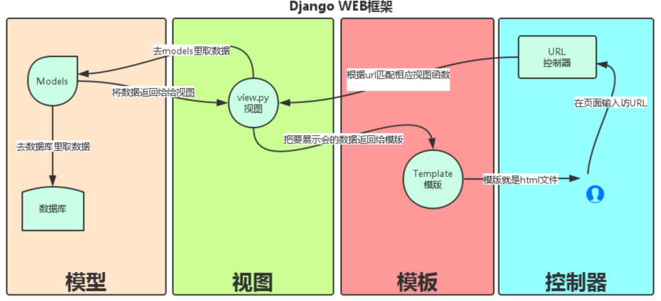
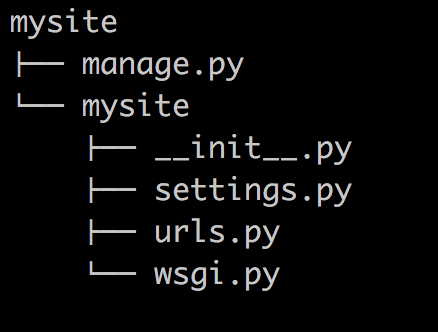
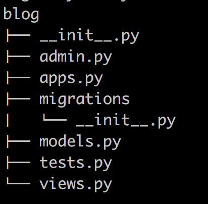
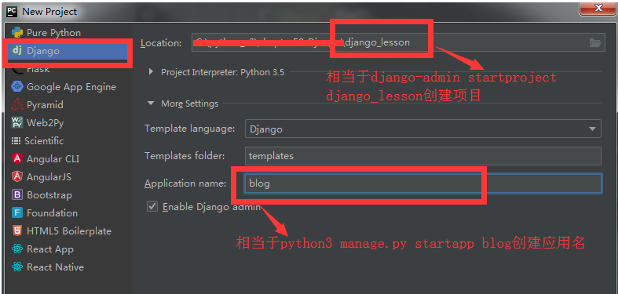

原文连接:https://www.cnblogs.com/hackerer/p/11614409.html
Django
一、web框架
框架，即时framework,特指为解决一个开放性问题而设计的具有一定约束性的支撑结构，使用框架可以帮你快速开发特定的系统，简单的说，就是用别人搭建好的舞台来表演你的才艺。
对于所有的web应用，本质上其实就是一个socket服务端，用户的浏览器其实就是一个socket客户端。
import socket
def handle_request(client):
buf = client.recv(1024)
client.send("HTTP/1.1 200 OK\r\n\r\n".encode("utf8"))
client.send("<h1 style='color:red'>Hello, simon</h1>".encode("utf8"))
def main():
sock = socket.socket(socket.AF_INET, socket.SOCK_STREAM)
sock.bind(('localhost',8001))
sock.listen(5)
while True:
connection, address = sock.accept()
handle_request(connection)
connection.close()
if __name__ == '__main__':
main()最简单的web应用就是先把HTML用文件保存好，用一个现成的HTTP服务器软件，接收用户请求，从文件中读取HTML，返回。如果要动态生成HTML，就需要把上述步骤自己来实现，不过，接收HTTP请求、解析HTTP请求、发送HTTP响应都是苦力活，如果我们自己来写这些底层代码，还没开始写动态HTML呢，就得花个把月读HTTP规范。 正确的做法是底层代码由专门的服务器软件实现，我们用python专注于生成HTML文档。因为我们不希望接触到tcp链接、HTTP原始请求和响应格式，所以，需要一个统一的接口，让我们专心用python编写web业务。
这个接口就是WSGI:Web Server Gateway Interface.
例子：
#_*_ coding:utf-8 _*_
# Author:Simon
# Datetime:2019/9/28 14:39
# Software:PyCharm
from wsgiref.simple_server import make_server
def foo1():
f=open("index1.html","rb")
data=f.read()
return data
def foo2():
f=open("index2.html","rb")
data=f.read()
return data
def application(environ, start_response):
print("path",environ["PATH_INFO"])
path=environ["PATH_INFO"]
start_response('200 OK', [('Content-Type', 'text/html')])
if path=="/simon":
return [foo1()]
elif path=="/zhurui":
return [foo2()]
else:
return [b"404"]
# return [b'<h1>Hello, web!</h1>']
httpd = make_server('', 8080, application)
print('Serving HTTP on port 8000...')
# 开始监听HTTP请求:
httpd.serve_forever()模拟web框架：
#_*_ coding:utf-8 _*_
# Author:Simon
# Datetime:2019/9/28 14:39
# Software:PyCharm
from wsgiref.simple_server import make_server
import time
def foo1(req):
f=open("index1.html","rb")
data=f.read()
return data
def foo2(req):
f=open("index2.html","rb")
data=f.read()
return data
def login(req):
print(req["QUERY_STRING"])
return b"welcome!"
def signup(req):
pass
def showtime(req):
times=time.ctime()
# return ("<h1>time:%s</h1>"%str(times)).encode("utf8")
f=open("showtime.html","rb")
data=f.read()
data=data.decode("utf8")
data=data.replace("{{time}}",str(times))
return data.encode("utf8")
def router():
url_patterns=[
("/login",login),
("/signup",signup),
("/zhurui",foo2),
("/simon",foo1),
("/showtime",showtime),
]
return url_patterns
def application(environ, start_response):
print("path",environ["PATH_INFO"])
path=environ["PATH_INFO"]
start_response('200 OK', [('Content-Type', 'text/html')])
url_patterns = router()
func=None
for item in url_patterns:
if item[0]==path:
func=item[1]
break
if func:
return [func(environ)]
else:
return [b"404"]
# return [b'<h1>Hello, web!</h1>']
httpd = make_server('', 8080, application)
print('Serving HTTP on port 8000...')
# 开始监听HTTP请求:
httpd.serve_forever()二、MVC和MTV模式
著名的MVC模式：所谓的MVC就是把web应用分为模型(M),控制器(C),视图(V)三层；他们之间以一种插件似的，松耦合的方式连接在一起。
模型负责业务对象与数据库的对象(ORM),视图负责与用户的交互(页面)，控制器(C)接收用户的输入调用模型和视图完成用户的请求。

Djando的MTV模型本质上与MVC模型没什么区别，也是各组件之间为了保持松耦合关系，只是定义上有些不同，Django的MTV分别代表：
Model(模型)：负责业务对象与数据库的对象(ORM)
Template(模板)：负责如何把页面展示给用户
View(视图)：负责业务逻辑，并在适当的时候调用Model和Template
此外，Django还有一个url分发器，它的作用是将一个个URL的页面请求分给不同的view处理，view再调用相应的Model和Template

三、Django的流程和命令行工具
3.1 django流程：
django
#安装： pip3 install django
添加环境变量
#1 创建project
django-admin startproject mysite //创建项目
---mysite
---settings.py
---url.py
---wsgi.py
---- manage.py(启动文件)
#2 创建APP
python mannage.py startapp app01
#3 settings配置
TEMPLATES
STATICFILES_DIRS=(
os.path.join(BASE_DIR,"statics"),
)
STATIC_URL = '/static/'
# 我们只能用 STATIC_URL，但STATIC_URL会按着你的STATICFILES_DIRS去找#4 根据需求设计代码
url.py
view.py
#5 使用模版
render(req,"index.html")
#6 启动项目
python manage.py runserver 127.0.0.1:8090
#7 连接数据库，操作数据
model.py3.2 django的命令行：
django-admin.py 是Django的一个用于管理任务的命令行工具，manage.py是对django－admin.py的简单包装,每一个Django Project里都会有一个mannage.py。
<1> 创建一个django工程 : django-admin.py startproject mysite
当前目录下会生成mysite的工程，目录结构如下：

manage.py----------------django项目里面的工具，通过可以调用django shell和数据库等。
settings.py----------------包含项目的默认设置，包含数据库信息，调试标致以及其他一些工作的变量。
<2>在mysite目录下创建blog应用: python manage.py startapp blog

使用pycharm快捷创建：

<3>启动django项目：python manage.py runserver 8080
这样我们的django就启动起来了！当我们访问：http://127.0.0.1:8080/时就可以看到：
三、Django URL(路由系统)
URL配置(URL conf)就像Django所支撑网站的目录。它的本质是URL模式以及要为该URL模式调用的视图函数之间的映射表；你就是以这种方式告诉Django，对于这个URL调用这段代码，对于那个URL调用那段代码。
urlpatterns = [
url(正则表达式, views视图函数，参数，别名),
]参数说明：
● 一个正则表达式字符串
● 一个可调用对象，通常为一个视图函数或一个指定视图函数路径的字符串
● 可选的要传递给视图函数的默认参数(字典形式)
● 一个可选的name参数
实例：
from django.contrib import admin
from django.urls import path
from django.conf.urls import url
from blog import views
urlpatterns = [
path(r'admin/', admin.site.urls),
path(r'show_time/', views.show_time),
url(r'article/(\d{4})$', views.article_year),
url(r'article/(?P<year>\d{4})/(?P<month>\d{2})', views.article_year_month),
url(r'article/(?P<year>\d{4})/(?P<month>\d{2}/\d+)', views.article_year_month),
]